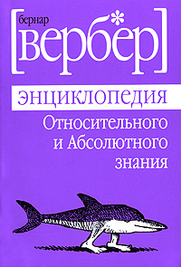

Читаю книгу Бернара Вербера «Энциклопедия относительного и абсолютного знания». Книгу, конечно, горячо рекомендую. Написана в похожей на энциклопедию форме — множество небольших статей, в основном между собой никак не связанных.

Вчера натолкнулся на абзац, который в принципе совпадает с моими взглядами на жизнь человека. Суть следующая — в соревновании на скорость между борзой и человеком всегда выиграет собака. Когда человек бежит дистанцию он пытается распределить силы, думает о дыхании, подсознательно ждет финиша. Возможно даже представляет себя на пьедестале почета. Собака просто бежит.
Этот не совсем справедливый с точки зрения биологии факт, на мой взгляд является секретом тех же китайцев, которые просто работают. Я не китаец, но этот подход меня вполне устраивает.